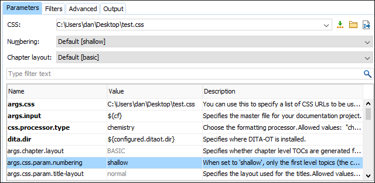

Defining the Transformation Type and Allowed Parameters in a DITA-OT Plugin
Custom DITA-OT plugins may contribute new transformation types (transtypes) and each transtype may have a set of allowed configuration parameters. If a DITA-OT plugin declares a transtype, Oxygen XML Editor detects that transformation type declaration and presents descriptions in the DITA Transformation Type dialog box and the contributed parameters in the transformation scenario's Parameters tab.
To define a transformation type and its contributed parameters in a DITA-OT plugin, follow
this procedure:
- If you have not already done so, create a DITA-OT plugin.xml file (you can easily create this file by using the DITA-OT Plugin new document template in the New document wizard).
- In the plugin.xml file, define the transformation type details by using the
<transtype>element to specify a name, description, and the transtype it extends.<transtype name="xhtml" extends="base-html" desc="HTML">
- Define allowed parameters by using the
<param>element to specify the name, description, and information about the default and allowed set of values. For more information, see: https://www.dita-ot.org/3.1/topics/plugin-configfile.html.<param name="args.indexshow" desc="Specifies whether to show the index" type="enum"> <val>yes</val> <val default="true">no</val> </param>
Depending on the type declared for a parameter, Oxygen XML Editor will help you pick values for each parameter edited in the Parameters tab of the transformation scenario configuration dialog box. For example, for parameters of type "enum", Oxygen XML Editor will present a combo box for choosing the proper value for the parameter. - You can also extend various extension points in your plugin.xml. For more
information, see: https://www.dita-ot.org/3.1/extension-points/plugin-extension-points.html.Plugin Extension Example - Promote Parameters:It is possible to promote certain transformation parameters so that they appear above the table of allowed parameters and values in the Parameters tab of the transformation scenario configuration dialog box. To do this, you could create a pluginExtension.xml file in the root folder of the DITA-OT plugin and use the
<promotedParams>element to define the promoted parameters. Here is an example:<extensionPlugin> <transtype name="pdf-css-html5"> <promotedParams> <param name="args.css" promotedName="CSS"/> <param name="args.css.param.numbering" promotedName="Numbering"/> <param name="args.chapter.layout" promotedName="Chapter layout"/> </promotedParams> </transtype> </extensionPlugin>The example above results in the Parameters tab looking like this:
Figure 1. Promoted Parameters  - Install the plugin.Note: If the plugin is installed using an external command line, you may need to restart Oxygen XML Editor to properly re-detect the newly contributed transtypes and parameters.
Example of a plugin.xml
File:
<plugin id="com.oxygenxml.pdf.prince"> <!-- extensions --> <feature extension="dita.conductor.transtype.check" value="pdf-prince" type="txt"/> <feature extension="dita.conductor.target.relative" value="integrator.xml" type="file"/> <feature extension="dita.transtype.print" value="pdf-prince"/> <transtype name="pdf-prince" extends="commons" desc="PDF (Prince XML)"> <param name="princeExecPath" type="file" desc="Path to the Prince executable"/> </transtype> </plugin>
For more information, watch this DITA-OT Day 2015 presentation: